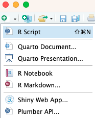
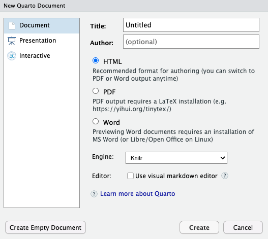
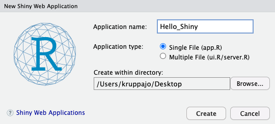
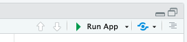
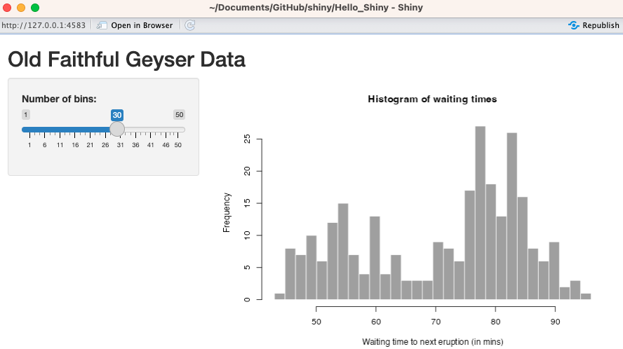
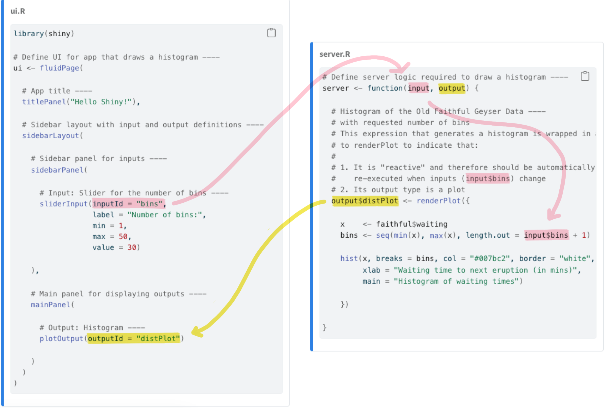
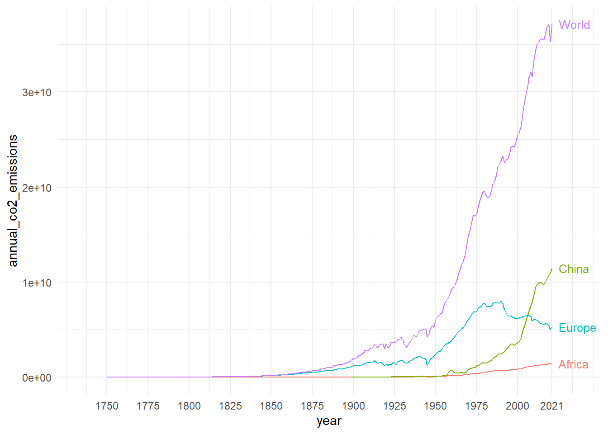
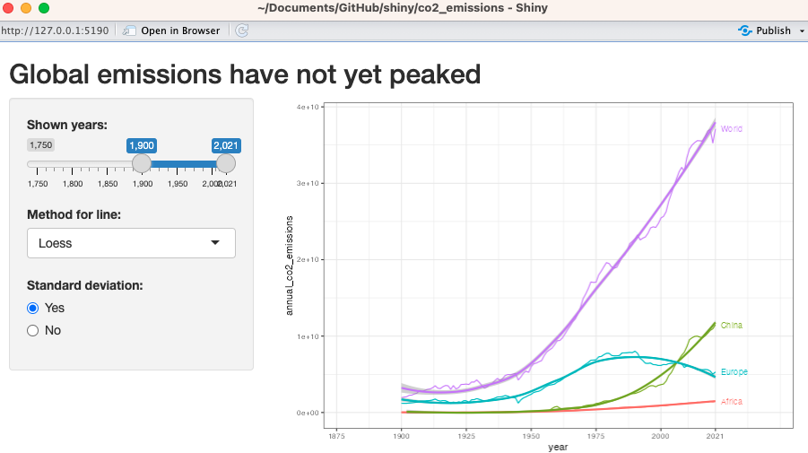

pacman::p_load(tidyverse, magrittr, readxl,
janitor, see, directlabels,
owidR, conflicted)
conflicts_prefer(dplyr::filter)14 Quarto und Shiny App
Letzte Änderung am 04. December 2023 um 18:39:49
“You have to be creative to do science. Otherwise you’re just repeating tired old formulas. You arent’t doing anything new.” — Steven Hawking
Ja und jetzt wird es wirklich wild. Wir schauen hinter den Vorhang der Bühne. Denn du liest ja hier, was ich in R Quarto geschrieben habe. Also ich nutze wirklich R Quarto um diese Webseite hier in R und Quarto zu erstellen. Gut ich lade dann noch alles bei Github hoch, aber am Ende ist es wirklich nicht schwer. Denn wenn es wirklich schwer wäre, dann hätte ich es auch nicht hinbekommen. Was Webseiten programmieren und so ein Zeug angeht, habe ich nämlich Null Ahnung. Das was du hier alles siehst, macht R Quarto für mich. Und das ist ganz phantastisch.
Eine andere Sache, dir wir uns auch noch anschauen wollen, ist im Prinzip ein interaktive Visualisierung. Wir können nämlich R Shiny nutzen um reponsive (deu. reagierend) Abbildungen und Tabellen zu erstellen. Der vollständige Name lautet Shiny Web App, aber ich kürze gerne auf R Shiny ab. Wir können also eine Webseite mit Reglern bauen, die es uns dann ermöglichen die Abbildungen und Tabellen anhand der Einstellung am Regler sekündlich zu ändern. Das ermöglicht Dritten dann deine Auswertung auch mit einem anderen Subset deiner Daten durchzuführen oder aber sich etwas anderes in den Daten anzuschauen. Insbesondere für die Darstellung von großen Datenbanken mit Temperatur, Gewächshaustyp und Pflanzenarten ergibt sich hier ganz neue Möglichkeiten. Du findest dann den Code für alle Shiny Apps auf https://github.com/jkruppa/shiny.
Abschließend sei noch gesagt, dass du dann natürlich mit CSS Dateien das Look & Feel der Shiny App oder aber der Quarto Webseiten beliebig einem anderen Design anpassen kannst. Wenn du also mal später für eine Firma arbeitest, kannst du die Shiny Apps sicherlich passend in die Oberfläche einer Firmenwebseite einbauen. Die Farben und das Aussehen lässt sich dann beliebig über eine CSS Datei anpassen. Dazu dann aber auf der Hilfeseite Using custom CSS in your app als möglicher Einstieg für die Umgestaltung einer Shiny App. Ich selber kenne mich mit CSS nicht aus.
Cheat Sheets in R als tolle Zusammenfassung und Hilfe
Auch hier möchte ich auf die beiden Cheat Sheets für R Quarto und R Shiny verweisen. Schau dir einmal das Publish and Share with Quarto :: Cheatsheet an oder werfe mal einen Blick in das Shiny :: Cheatsheet. Besonders das R Shiny Cheat Sheet gibt nochmal einen schönen Überblick über die ganzen Input Optionen. Schau da einfach mal als Inspiration drüber.
14.1 Genutzte R Pakete
Wir wollen folgende R Pakete in diesem Kapitel nutzen.
Am Ende des Kapitels findest du nochmal den gesamten R Code in einem Rutsch zum selber durchführen oder aber kopieren.
14.2 R Quarto
Was du hier siehst ist in R Quarto geschrieben. Damit ist es recht schwer für mich dir hier in diesem Text zu zeigen, wie der Text strukturell aufgebaut ist. Dafür gibt es die tolle Hilfsseite Welcome to Quarto, die dir da sehr viel weiter hilft. In der folgenden Abbildung 14.1 siehst du einmal, wie du ein neues Quarto Dokument erstellst. Wir gehen hier nicht den ganzen Prozess durch, dafür gibt es dann am Ende noch ein YouTube Video.

Quarto Document... aus.In der Abbildung 14.6 siehst du dann das nächste Fenster, indem du dann den Titel des Dokuments und dich als Autor eintragen kannst. Darüber hinaus auch noch das Ausgabeformat. Richtig, du kannst hier auch gleich MS Word wählen. Ich nehme dann meistens HTML aber auch PDF funktioniert für mich gut. Du kannst dann aber später jederzeit die Ausgabe ändern! Du bist hier nicht an einen Typ gebunden, das ist ja das Schöne. Ein Skript, viele Ausgabenmöglichkeiten.

Im Folgenden einmal die Links zu den einzelnen Kapiteln der Hilfeseite von Quarto, die dich dann direkt zu den entsprechenden Seiten bringen.
- Creating a Document — hier einmal als Einstieg das HTML Dokument, aber du kannst natürlich auch zu den anderen Dokumenttypen leicht wechseln. Ein Dokument kannst du dann als Word erstellen und mit diesem Dokument und den erstellten Tabellen weiterarbeiten. Eine gute Möglichkeit um mal einen Projektbericht zu schreiben.
- Creating a Presentation — hier einmal die Möglichkeit um eine Präsentation zu erstellen. Und verrückterweise gehen sogar Power Point Präsentationen. Ich habe selber noch nicht PowerPoint mit R kombiniert. Daher weiß ich auch noch nicht wie sich das dann mit R verhält.
- Creating a Website — hier einmal die Erstellung einer Webseite. Muss nicht R zusammen sein. Aber ich finde es ist ein angenehmer Weg um seine Ergebnisse anderen öffentlich zu präsentieren. Es gibt hier sicherlich auch die Möglichkeit, den Zugriff auf die Webseite zu begrenzen, so dass Google und Co. die Webseite nicht finden.
- Creating a Book – hier einmal die Erstellung eines Buches. Das was du hier gerade liest, ist mit dem Template eines Buches in R Quarto erstellt. Ja, du besuchst die Seite über einen Brwoser, aber die grundlegende Struktur ist die eines Buches. Theoretisch könnte ich den Text hier auch als E-Book exportieren. Dafür ist dann aber leider hier alles zu groß geworden.
Nur ein Dokument für HTML anstatt noch ein Ordner dazu!
Wenn du deine HTML Ausgabe als ein Standalone HTML Dokument habe willst, dann setze einfach in den YAML Header am Beginn des Dokuments folgenden Code.
format:
html:
embed-resources: trueDann wird aber nicht die Matheumgebung mit eingebunden. Dafür musst du dann den folgenden Code verwenden. Aber da nicht alle Dokumente Matheformeln enthalten, muss es auch nicht immer sein.
format:
html:
embed-resources: true
self-contained-math: trueDie Stärke von R Quarto kommt natürlich zu tragen, wenn wir die Analysen oder die deskriptive Statistik in einem Dokument zusammen erstellen können. Die deskriptiven Tabellen können wir leicht mit dem R Paket modelsummary oder gtsummary erstellen. Ich zeige die Erstellung einmal exemplarisch in dem Kapitel zur deskriptiven Statistik in dem Abschnitt zur Automatisierten Tabellenerstellung in R. Neben den beiden vorgestellten gibt es natürlich auch Alternativen zu gtsummary und modelsummary. Da müsstest du dann aber mal selber schauen oder mich direkt Fragen. Wie immer gibt es in R nicht nur die eine Möglichkeit eine Tabelle zu erstellen.
14.3 R Shiny App
Vor gar nicht allzu langer Zeit sprach ich mit einer Freundin aus meiner eigenen Studentenzeit, die jetzt bei einer großen Pharmafirma arbeitet, über R und die Anwendung von R bei ihr in der Firma. Wie sich herausstellte ist dort R Shiny sehr beliebt. Die Statistiker oder jetzt Data Scientist und Data Analyst arbeiten dort die Datenmengen in R Shiny Apps auf, so dass dann die Anderen in der Firma dann leichter an den Daten rumschrauben können. Das erspart allen sehr viel Arbeit, den fixierte Berichte müssen bei jeder Änderung ja wieder neu gemacht werden.
Deshalb kann ich nur sagen: Welcome to Shiny. Wenn du wirklich jemanden mit deiner Analyse von Daten beeindrucken willst, dann nutze R Shiny. Auf der anderen Seite gibt es manchmal Datensätze mit so vielen Subgruppen oder aber anderen Messwerten, dass ich immer gar nicht weiß, was ich alles in einer statischen Abbildung reinpacken soll. Da ist mir dann eine dynamische Abbildung hundertmal lieber. Ich kann auch hier nur die groben Umrisse liefern. Mehr erfährst du dann in dem Video zur Erstellung einer Shiny App. Aber wie immer, einfach mal selber ausprobieren. Du kannst wirklich mit wenig Aufwand richtig gute interaktive Webtools erschaffen.
Eine R Shiny App besteht immer aus zwei Teilen. Du hast immer die ui und einmal den server vorliegen. Das ist wichtig sich zu vergewissern. Gerade für Neulinge ist es dann immer etwas schwer, eine Idee davon zu entwickeln, was diese beiden Konzepte sein sollen. Deshalb hier nochmal zusammengefasst.
ui: Hier liegt alles drin, was du an Reglern und Oberfläche brauchst. Dieuibeschreibt, was du siehst, wenn du eine Shiny App startest. Hier arbeitest du selber mit der Shiny App. Welche Regler da sind und wie die Shiny App aufgebaut ist, findets du in derui.server: Hier liegen die Funktionen drin. Derservererstellt die Abbidlungen oder die Tabellen. Keine Angst, es handelt sich um ganz normalen R Code, der aber im Hintergrund die interaktiven Abbildungen erstelt. Du baust also hier das Grundgerüst für die Abbdilungen und Tabellen. Auch deine Bearbeitung der Daten machst du hier.
In der Abbildung 14.9 siehst du den Zusammenhang zwischen der ui und dem server in einer komplexeren R Shiny App einmal dargestellt. Komplex meint hier aber, dass wir die Shiny App auf zwei Dateien ui.R und server.R aufteilen. Ich habe dir in der Abbildung einmal farblich dargestellt, wie die Verbindungen so sind.
R Shiny App zu verschiedenen Verteilungen
Wir besuchen gerne die R Shiny App The distribution zoo um mehr über die verschiedenen Verteilungen und deren Parameter zu erfahren.
14.3.1 Shiny App in RStudio
Das tolle an der R Shiny App ist, dass wir alles im RStudio bauen können. In der Abbildung 14.3 siehst du einmal, wie du eine Shiny Web App einfach erstellen kannst. Wir gehen hier nicht den ganzen Prozess durch, sondern ich gehe wie immer auf die häufigsten Probleme einmal ein. Hier gibt es aber nicht so viele davon, eher Geschmacksfragen.
Shiny Web App... aus.Jetzt öffnet sich ein neues Fenster und du kannst den Namen deiner Shiny App eintragen. Hier ist es wichtig, sich schon für einen guten Namen zu entscheiden, später wird der Name auch Teil der Webadresse mit dem du dann die Shiny App aufrufst. Natürlich nur unter der Annahme, dass du deine Shiny App ins Internet stellst. Du kannst die Shiny App auch nur privat auf deinen Rechner laufen lassen. Nochmal, der Name des Ordners bestimmt den Namen deiner Shiny App, nicht der Name der R Datei oder Sonstiges was du angibst.
Jetzt muasst du dich noch entscheiden, ob deine Shiny App eher klein wird, dann nutze die Option Single File (app.R). Dann bauen wir eine einfache App, wie ich sie gleich mal in dem ersten Abschnitt vorstellen werde. Wenn deine Shiny App komplexer wird, dann solltest du Multiple Files (ui.R/server.R) wählen. Du kannst aber auch später leciht aus der einen Datei dann zwei Dateien bauen. Meist fange ich immer mit einer Datei app.R an und schaue wie komplex die Shiny App wird.

Im Folgenden schauen wir uns also die zwei Fälle einmal an. In dem ersten Fall willst du nur eine simple Shiny App mit wenigen Funktionen und einer simplen Oberfläche für die interaktive Anwendung bauen. Im zweiten Fall haben wir es dann schon mit einem komplexeren Fall zu tun und wir spalten dann die Oberfläche (ui.R) von den Berechnungen (server.R) ab.
Nachdem wir uns dann das Standardbeispiel mit der Shiny App Hello_Shiny angeschaut haben, werde ich dann nochmal ein komplexeres Datenbeispiel mit Daten von Our World in Data zeigen. Du findest dann den Code für alle Shiny Apps auf https://github.com/jkruppa/shiny. Dort lagere ich alle meine Shiny Apps, wenn dich da noch mehr interessiert.
Hier kommt das Video

14.3.2 Einfache Shiny App
Schauen wir uns als Erstes einmal eine sehr simple R Shiny App an. Mit simple meine ich, dass wir alles in eine Datei app.R packen. Wir brauchen nur diese eine Datei, da wir die ui und den server in zwei Funktionen auslagern. Beide Funktion sind jedoch weiterhin in der Datei app.R. In der Abbildung 14.5 siehst du den Aufbau einmal dargestellt. Wir haben daher unsere app.R in dem Ordner Hello_Shiny abliegen. Unsere Shiny App heißt dementsprechend nach dem Ordner auch Hello_Shiny. Die beiden Funktionalitäten der ui und des server werden durch Funktionen abgebildet.
flowchart LR
subgraph ide1 ["~/Documents/GitHub/shiny/Hello_Shiny"]
direction TB
A{app.R}:::nodeA --- B("ui( )"):::nodeB
A{app.R}:::nodeA --- C("server( )"):::nodeB
end
classDef nodeA fill:#E69F00,stroke:#333,stroke-width:0.75px
classDef nodeB fill:#56B4E9,stroke:#333,stroke-width:0.75px
ui und dem server in einer Datei app.R enthalten.Im Folgenden siehst du den Inhalt der app.R für unsere Shiny App Hello_Shiny. Einfach über die Zahlen am rechten Rand fahren um meine Kommentare zu lesen. Du musst immer das Paket shiny laden und natürlich die anderen R Pakete die du dann verwenden willst. Faktisch ist ja eine Shiny App nichts anderes als ein R Skript. Daher hier jetzt kein tieferer Text mehr, den der Code ist ja annotiert.
library(shiny)
# Define UI for application that draws a histogram
ui <- fluidPage(
# Application title
titlePanel("Old Faithful Geyser Data"),
# Sidebar with a slider input for number of bins
sidebarLayout(
sidebarPanel(
sliderInput("bins",
"Number of bins:",
min = 1,
max = 50,
value = 30)
),
# Show a plot of the generated distribution
mainPanel(
plotOutput("distPlot")
)
)
)
# Define server logic required to draw a histogram
server <- function(input, output) {
output$distPlot <- renderPlot({
# generate bins based on input$bins from ui.R
x <- faithful[, 2]
bins <- seq(min(x), max(x), length.out = input$bins + 1)
# draw the histogram with the specified number of bins
hist(x, breaks = bins, col = 'darkgray', border = 'white',
xlab = 'Waiting time to next eruption (in mins)',
main = 'Histogram of waiting times')
})
}
# Run the application
shinyApp(ui = ui, server = server)- 1
-
Funktion für die Erstellung der
ui, der Benutzeroberfläche. - 2
- Start des Layouts der Shiny App.
- 3
- Mit einem Kontrollpanel auf der Seite.
- 4
-
Mit einem Schieberegeler als Eingabe. Die Eingabe wird in
binsgespeichert. - 5
-
Im Hauptpanel ist die Abbildung
distplot. Die Abbildung entsteht in derserverFunktion. - 6
-
Funktion für die Erstellung des Histogramms mit dem
inputaus derui. - 7
-
Die zu erstellende Ausgabe
displotwird ins Objektoutputgeschrieben. - 8
-
Hier wird dynamisch der Wert aus dem
input$binsverwendet. - 9
-
Das Histogramm wird dynamisch mit sich ändernden Werten für
input$binsgeneriert. - 10
- Die eigentliche Funktion, um eine Shiny App zu starten.
Die Abbildung 14.6 zeigt dir, wie du die Shiny App starten kannst. Zum einen über Button > Run App direkt aus dem R Studio heraus. Dann öffnet sich ein anderes Fenster und R friert ein. Du kannst während eine Shiny App läuft nicht in R programmieren. Beende dafür erst die Shiny App durch das schließen des Fensters. Die zweite Möglichkeit ist, die Shiny App zu veröffentlichen. Die Veröffentlichung findet auf https://www.shinyapps.io/ statt und du musst dich dort erst anmelden. Dann kannst du dein RStudio über einen Tocken mit der Webseite verbinden. Es gibt einen kostenlosen Account, der eine sehr begrenzte Laufzeit der Apps erlaubt. Daher immer die Shiny Apps auf dem Dashboard von https://www.shinyapps.io/ stoppen und auf Sleeping setzen. Das Schöne ist jetzt, dass du über einen Browser weltweit auf die Shiny App zugreifen kannst.

> Run App starten wir die Shiny App aus dem R Studio heraus. Wenn du auf den Pfeil nach unten klickst, dann kannst du auch andere Optionen für den Start der Shiny App wählen. Als zweite Möglichkeit auf den Button Publish rechts neben > Run App klicken.In der Abbildung 14.7 siehst du jetzt das Ergebnis der gestarteten Shiny App Hello_Shiny. Auf der rechten Seite siehst du den Regler, der die Anzahl an bins definiert. Hier sind die bins die Anzahl an Säulen in dem Histogramm. Alles was du hier siehst, wird in der ui definiert. Der R Code für die dynamische Erstellung des Histogramms ist dann in dem server zu finden. Ja, es ist etwas ironisch, dass ich hier eine dynamische Webseite mit einem Screenshot darstelle.

Hello_Shiny Shiny App. Etwas sinnlos eine dynamische App durch einen Screenschots darzustellen . Aber so sieht dann diese sehr simple App aus.Und damit haben wir unsere R Shiny App auch schon fertig. Das war jetzt das Beispiel für eine Shiny App in einer Datei. Jetzt schauen wir uns das Ganze nochmal an, wenn wir eine komplexere Shiny App bauen würden.
14.3.3 Komplexere Shiny App
Im Folgenden schauen wir uns eine komplexere Shiny App an. Die Shiny App ist selber die gleiche wie eben schon, nur das wir die ui und den server auf zwei Dateien aufteilen sowie den Aufruf der Shiny App dann in eine dritte Datei auslagern. Das macht dann Sinn, wenn die ui sehr groß wird oder aber du noch sehr viel ändern möchtest. Schnell wird dann mal eine Datei sehr unübersichtlich. Das gleiche gilt dann auch für den server schnell hast du so viele Funktionen, da macht es dann Sinn, die Funktionen in eine Extradatei auszulagern. Wenn du die Shiny App aus dem RStudio startest, dann brauchst du die app.R mit der Funktion runApp() nicht, dann starte die Shiny App aus der ui.R Datei. In der Abbildung 14.8 siehst du den Zusammenhang nochmal schematisch dargestellt.
flowchart LR
subgraph ide1 ["~/Documents/GitHub/shiny/Hello_Shiny"]
direction LR
B[(ui.R)]:::nodeB --> A{app.R}:::nodeA
C[(server.R)]:::nodeB --> A{app.R}:::nodeA
end
classDef nodeA fill:#E69F00,stroke:#333,stroke-width:0.75px
classDef nodeB fill:#56B4E9,stroke:#333,stroke-width:0.75px
ui.R, server.R und app.R im Ordner Hello_Shiny.Wir du im Folgenden siehst, besteht die Datei app.R nur noch aus dem Aufruf runApp(). Mit der Funktion runApp() startest du dann die Shiny App, die sich in dem entsprechenden Orderpfad befindet. Damit ist eigentlich schon alles gesagt, die Funktion runApp() sucht sich dann die ui.R und die server.R und startet die Shiny App. Deshalb müssen auch unbedingt die beiden Dateien ui.R und server.R in dem Ordner Hello_Shiny liegen. Hier hast du keine Wahl über den Namen der Datei. Alles andere kann natürlich auch noch im Ordner liegen, wie zum Beispiel zusätzliche Daten oder aber ausgelagerte Funktionen, die erst in der Datei server.R geladen werden.
Die beiden folgenden Dateien ui.R und server.R unterscheiden sich nicht vom Code in der Datei app.R aus dem obigen Beispiel zur simplen Shiny App. Die Funktionen zur ui und server sind jetzt aufgeteilt in die beiden Dateien. Deshalb schaue nochmal oben, wenn dich die Annotation des R Codes interessiert. Ein anderes Beispiel findest du dann am Ende des Kapitels wo ich dann nochmal mit externen Daten arbeite.
In der Abbildung 14.9 ist nochmal die Vernetzung der beiden Dateien ui.R und der server.R dargestellt. Ich stelle mir die Sachen auch gerne als Abbildung dar, wenn ich eine Shiny App plane. Natürlich nicht als fertige App sondern als Skizze auf einem guten, alten Blattpapier. Du siehst hier sehr gut, wie die Option input$bins aus der ui.R in die server.R weitergeleitet werden. Hier ist eigentlich der Witz, sich klar zu machen, was wir wie von der einen Datei in die andere Datei weiterleiten. In Shiny gibt es eine Reihe von Slidern und Möglichkeiten einen Input zu generieren. Da musst du dann immer schauen, dass du den Überblick behälst. Immer einfach anfangen und dann steigern. In der server.R entsteht dann abschließend als Ausgabe das Histogramm, was über den output$distPlot wieder an die ui.R zurückgegebenen wird.

ui.R und der server.R. Die ui.R bildet die Oberfläche ab auf der sich die Regler befinden. Die geänderten Reglerinformationen werden über input dann in der server.R Datei verarbeitet und als ouput wieder an die ui.R wiedergeben. Dann ändert sich die Wiedergabe.14.3.4 Best practice
Wie baut man nun am besten eine Shiny App? Da gibt es wie immer viele Wege nach Rom. Ich beschreibe dir einfach meine Gedankengänge bei der Entwicklung einer Shiny App. Je mehr Apps du dann natürlich machst, desto einfacher fällt dir die Geneierung.
- Baue immer erst die
uiauf und achte darauf, dass du in der Shiny App alles siehst. Du baust dir am besten als erstes das Layout. Ohne eine Verbindung zu demserver. Du kannst ja einfach eine statische Abbildung erstellen lassen. Sonst weiß man immer nicht wo der Fehler herkommt. - Beginne immer mit einem
inputund erweitere dann immer Schritt für Schritt die anderen Eingabeparameter. Ich kommentiere mir im Zweifel dann dieinputs mit dem#aus, damit ich immer nur an einem Regler und dessen Input arbeite. - Erstelle die Ausgabegrafik oder Tabelle erstmal als statische
ggplotAbbildung oder eben als Tabelle. In einer Shiny App etwas zu bauen, ist wirklich sehr anstrengend und zäh. - Suche dir bei Google oder StackOverflow mit
R shiny <suchbegriff>die passende Hilfe. Es gibt eigentlich nichts, was nicht geht, aber wir müssen dann eben die Lösung auch finden. - Es kann Sinn machen erstmal die Shiny App in nur einer Datei zu bauen und dann später in
ui.Rundserver.Raufzuspalten. Dann hast du beides in einer Datei und musst nicht zwischen den Tabs hin und her wechseln.
Am Ende ist es wie bei jedem Best practice, es kommt auf dich an und wie du programmierst. Lass dich nur nicht frsutrieren, die Verkettung von verschiedenen Funktionen macht natürlich auch eine Shiny App etwas fehleranfälliger bei der Entwicklung.
14.4 Our World in Data
Am Ende wollen wir uns nochmal ein echtes Beispiel mit großen Daten anschauen. Deshalb bin ich zur Webseite Our World in Data gegangen und habe mir als Beispiel die Daten zum Thema Global emissions have not yet peaked heruntergeladen. Die Datei heißt annual-co-emissions-by-region.csv und wurde von mir nur etwas bearbeitet. Oh, was für ein Segen hier dann clean_names() aus dem R Paket janitor ist. Wir bauen jetzt hier erstmal die statische Abbildung in ggplot und überlegen, was wir alles machen könnten. Dann geht es weiter mit der Shiny App.
co2_tbl <- read_csv("data/annual-co-emissions-by-region.csv") %>%
clean_names()In der Tabelle 14.1 siehst du nochmal einen Auszug aus der Datei co2_tbl. Die Datei ist wirklich groß und beinhaltet sehr viele Länder und Jahre. Wir werden deshalb nur eine Auswahl an Ländern uns anschauen. Ich wähle relativ zufällig und aus Interesse world, Europe, China und Africa. Du könntest auch alle Länder nehmen, aber dann braucht die Grafik sehr lange und ich erkenne dann auch nichts mehr in der Abbildung. Aber probiere es einfach selber aus.
| entity | code | year | annual_co2_emissions |
|---|---|---|---|
| Afghanistan | AFG | 1949 | 14656 |
| Afghanistan | AFG | 1950 | 84272 |
| Afghanistan | AFG | 1951 | 91600 |
| Afghanistan | AFG | 1952 | 91600 |
| Afghanistan | AFG | 1953 | 106256 |
| Afghanistan | AFG | 1954 | 106256 |
| Afghanistan | AFG | 1955 | 153888 |
Nun können wir uns in der Abbildung 14.10 einmal das Ergebnis der Visualisierung über die Jahre anschauen. Wir sehen, dass wir eine Bandbreite von 1750 bis 2021 vorliegen haben. Dann habe ich noch die Namen der Länder rechts an die Graphen ergänzt.
co2_tbl %>%
filter(entity %in% c("World", "Europe", "China", "Africa")) %>%
ggplot(aes(year, annual_co2_emissions, color = entity)) +
theme_bw() +
geom_line() +
theme(legend.position = "none") +
scale_x_continuous(expand = c(0, 30), breaks = c(seq(1750, 2021, by = 25), 2021)) +
geom_dl(aes(label = entity), method = list(dl.trans(x = x + 0.2), "last.points", cex = 0.8))
Was könnten wir jetzt in einer Shiny App dynamisch ändern? Ich habe mir da drei Dinge überlegt.
- Wir ändern die Auswahl an Jahren. Also die Spannbreite der Jahre, die wir uns auf der x-Achse anschauen wollen. Das können wir über die Funktion
filter()in demserverabbilden, indem wir einfach einen Bereich an Jahren filtern. In deruibrauchen wir dann einen Schiebregeler, der uns die Auswahl ermöglicht. - Wir können über die Funktion
stat_smooth()noch eine Gerade anpassen, die nicht durch alle Messpunkte läuft. Wir wollen also einen Smoother anpassen. Da gibt es aber mehrere Arten von. Deshalb wäre es schön zwischenlm,loessundgamwählen zu können. Wir brauchen hier also ein Dropdownmenü in derui, was uns die Auswahl erlaubt. - Wir können in
stat_smootheinen Standardfehler als Bereich einblenden lassen. Dafür müssen wir die Optionse = TRUEsetzen. Da können wir uns dann einen Button in deruierstellen, der den Standardfehler einblendet oder ausblendet.
Im Folgenden siehst du dann einmal die annotierte app.R, die dir dann die Shiny App in der Abbildung 14.11 erstellt. Das Ganze geht natürlich noch viel schöner und besser, aber hier will ich einmal das Prinzip zeigen.
pacman::p_load(shiny, tidyverse, magrittr, readxl,
janitor, see, directlabels,
conflicted)
conflicts_prefer(dplyr::filter)
## read in the need data
co2_tbl <- read_csv("annual-co-emissions-by-region.csv") %>%
clean_names()
# Define UI for application that draws a histogram
ui <- fluidPage(
# Application title
titlePanel("Global emissions have not yet peaked"),
# Sidebar with a slider input for number of bins
sidebarLayout(
sidebarPanel(
sliderInput("years",
"Shown years:",
min = 1750,
max = 2021,
step = 25,
value = c(1750, 2021)),
selectInput("method", "Method for line:",
c("Linear" = "lm",
"Loess" = "loess",
"Gam" = "gam")),
radioButtons("se",
"Standard deviation:",
c("Yes" = "yes",
"No" = "no")),
),
# Show a plot of the generated distribution
mainPanel(
plotOutput("line_plot")
)
)
)
# Define server logic required to draw a histogram
server <- function(input, output) {
output$line_plot <- renderPlot({
se_flag <- switch(input$se,
yes = TRUE,
no = FALSE)
# ggplot from above with the options from `input`
co2_tbl %>%
filter(entity %in% c("World", "Europe", "China", "Africa")) %>%
filter(year >= input$years[1] & year <= input$years[2]) %>%
ggplot(aes(year, annual_co2_emissions, color = entity)) +
theme_bw() +
geom_line() +
stat_smooth(method = input$method, se = se_flag) +
theme(legend.position = "none") +
scale_x_continuous(expand = c(0, 30),
breaks = c(seq(1750, 2021, by = 25), 2021)) +
geom_dl(aes(label = entity),
method = list(dl.trans(x = x + 0.2),
"last.points", cex = 0.8))
})
}
# Run the application
shinyApp(ui = ui, server = server)- 1
-
Die Daten
annual-co-emissions-by-region.csvim gleichen Ordner werden geladen. - 2
- Der Slider für die Jahre wird erstellt. Wir wollen immer in 25 Jahre Schritten weitergehen.
- 3
-
Das Dropdownmenü wird gesetzt. Wir haben hier die drei Methoden
lm,loessundgamvoreingestellt. - 4
- Der Button für den Standardfehler ja/nein für den Smoother in der Abbildung.
- 5
-
Unser Plot aus dem
serverwird dannline_plotheißen und wird hier wiedergeben. - 6
-
Der
input$sewird inTRUEoderFALSEaufgelöst. Brauchen wir gleich beise = se_flag. - 7
-
Wir filtern nach der unteren Grenze des Schiebers
input$years[1]und der oberen Grenze es Schiebersinput$years[2] - 8
-
Wir generieren die Gerade nach der Methode
input$methodund entscheiden, ob wir einen Standardfehler einzeichnen wollenTRUE/FALSE.
Wie schon oben geschrieben, erhalten wir am Ende die Shiny App in der Abbildung 14.11. Ich habe hier die Jahre von 1900 bis 2021 gewählt und mit als Methode für Gerade dann Loess ausgewählt. Ich wollte mir zwar den Standardfehler einzeichnen lassen, aber die Methode Loess gibt keinen Fehler zurück. Deshalb dann hier auch kein Standardfehler. Wenn du dir die Methode Linear anschaust, wirst du dann einen Bereich für den Standardfehler eingezeichnet bekommen.

co2_emissons Shiny App. Etwas sinnlos eine dynamische App durch einen Screenschots darzustellen . Aber so sieht dann diese etwas komplexere App aus.Und jetzt? Naja, es ist so, dass es für R Shiny Apps sehr viele Quellen und Anwendungen gibt. Hier heißt es dann mal selber probieren. Ich finde persönlich, dass mit R Shiny die Flexibilität besteht Laien, die mit dem ganzen Modellieren nichts zu tun haben, eine Möglichkeit zu geben selber eine explorative Datenanalyse durchzuführen. Wenn eine Shiny App gut gemacht ist, dann kannst du mit deinem Team super zusammen in Daten stöbern. Und das ist ja die Stärke von einer dynamischen Abbildung, dass du dann in einem Meeting noch die Abbildung ändern kannst.